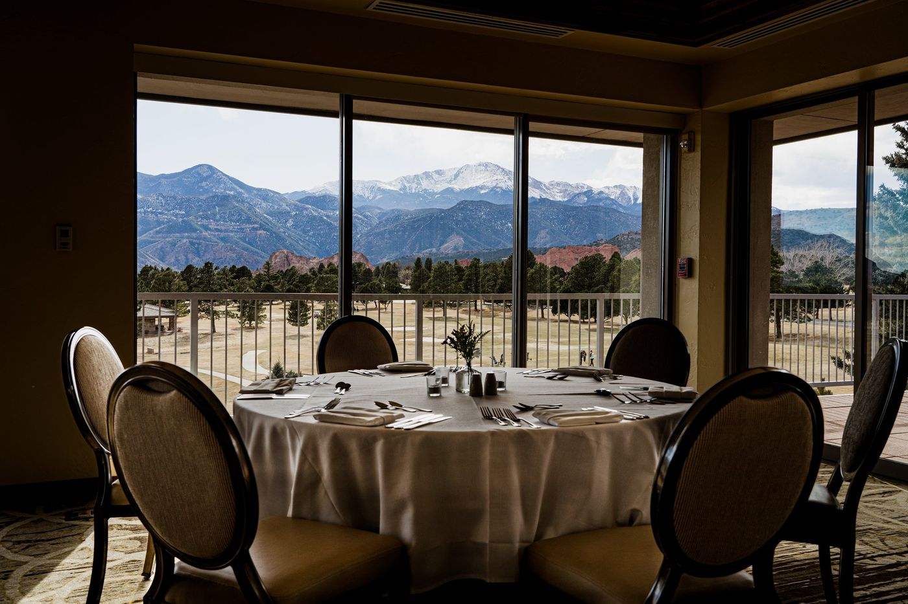
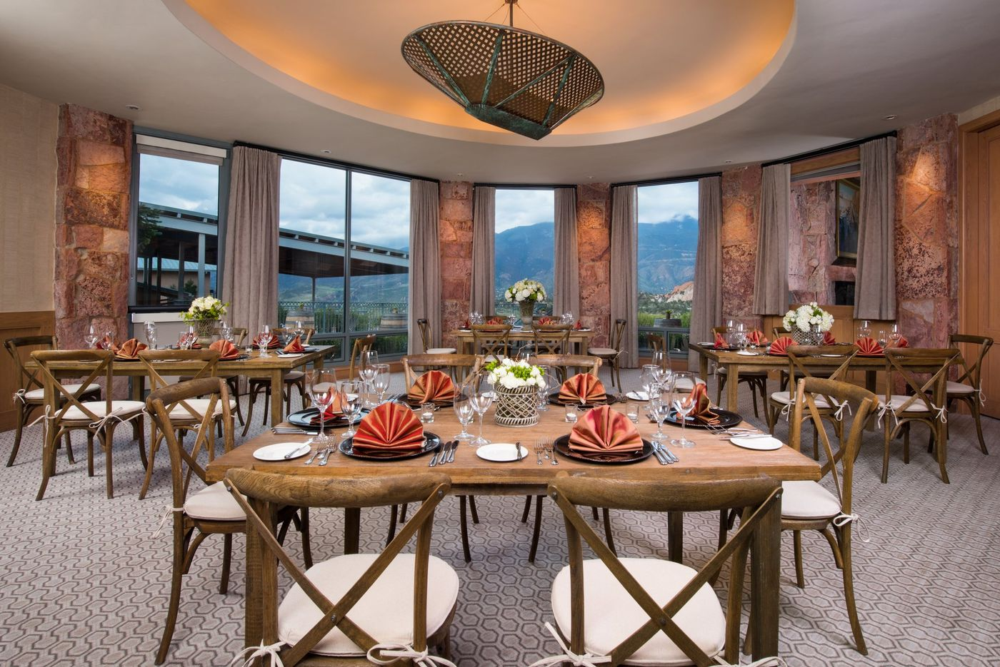
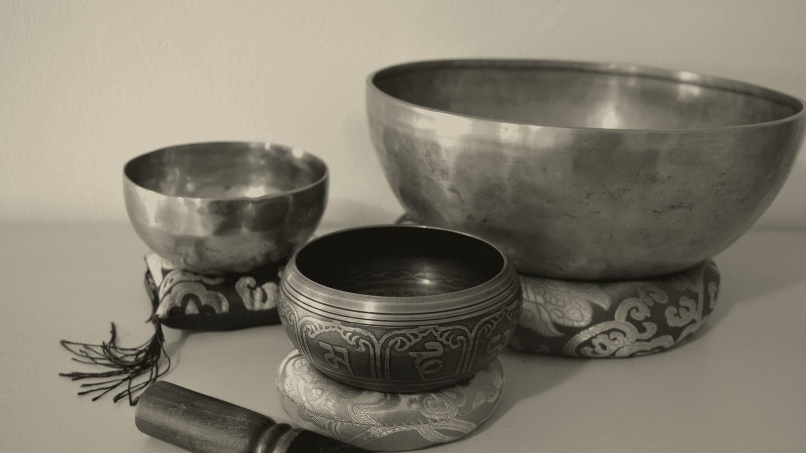

Ceremonies of up to 220
Reflection Pool
The Reflection Pool is the resort’s main outdoor ceremony site, for up to 220 guests seated.
BOOK LIVE MUSIC IN COLORADO
Wedding and event music at a Colorado Springs resort
Garden of the Gods Resort looks out over the red rocks of Garden of the Gods and up to Pikes Peak. It was a private club for decades, and it’s one of the most beautiful places in Colorado for a wedding.
It has seven event spaces with five terraces and lawns between them, and most of them look right at the rocks.
Trusted and booked by
Ceremonies of up to 220
The Reflection Pool is the resort’s main outdoor ceremony site, for up to 220 guests seated.

The Three Graces Ballroom is about 3,400 sq ft, for 220 to 300 guests. It has a glass-walled foyer and a private terrace with fire and water features.
Our pick
Tejas works as a duo out on the private terrace or as a full band inside the Three Graces Ballroom.

The View at Kissing Camels is about 2,700 sq ft, for 130 to 150 guests, looking out over the golf course, Pikes Peak and the red rocks.
Our pick
Meghan Clarisse’s country and Americana, solo or as a duo, for a dinner with that view.
100 to 150 guests
The Garden Room is a ballroom with windows, about 1,900 sq ft, for 100 to 150 guests, and it can be divided.

The Hill Room is round, with picture windows facing the rocks and the mountains, for 40 to 60 guests.
“Our guests couldn’t stop talking about how amazing he was, and we loved how he read the crowd and kept everyone engaged. He went above and beyond to make our day special, even learning a few of our favorite songs just for us.”

The ceremony
The Reflection Pool
Classical Strings
A solo violin or a string quartet for the processional at the Reflection Pool.

The cocktail hour
The Three Graces Terrace
Dirty Flamenco
Flamenco and rumba out on the Three Graces Terrace, by the fire and water features.

The reception
The Three Graces Ballroom
Little Moses Jones
Little Moses Jones for the reception, when you want a packed dance floor.
Want some more ideas? Check out live music for a Colorado Springs wedding.

The retreat
Firstwater
A sound bath from Firstwater for a company retreat or a wellness week at the resort.

The gala
The Three Graces Ballroom
Changes Jazz Trio
Changes for a gala dinner in the Three Graces Ballroom.

The welcome night
The View at Kissing Camels
Americana Band
The Americana band for a welcome night at the View, when your guests are flying in and you want it to sound like Colorado.
We also have ideas for holiday parties in Colorado Springs and other corporate events. We also wrote about what Colorado Springs sounds like.

Colorado Springs
The Centennial, Colorado and Remingtons ballrooms and the beach on the resort’s private lake.
Acts we'd pickClassical Strings · Tejas Singh · Little Moses Jones
Live music at Cheyenne Mountain Resort
Colorado Springs, at the foot of Cheyenne Mountain
The Main Ballroom, the Lake Terrace and Lakeside Terrace, Broadmoor Hall, the International Center and Cheyenne Lodge.
Acts we'd pickClassical Strings · Jazz Duo · Dirty Flamenco
Live music at the Broadmoor